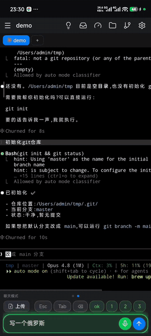
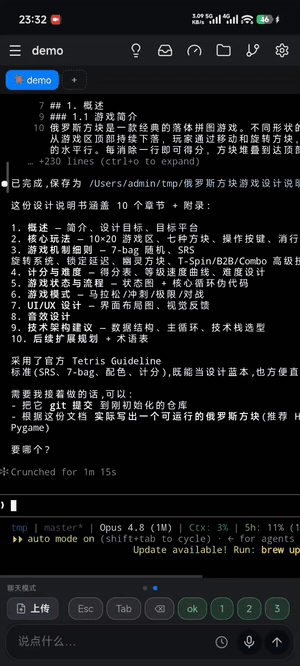

drive your agent,
ditch the desk
Keep your creativity in hand. One command on your computer, scan a QR — and pick up your build the moment inspiration hits.
Step away from your desk and the work doesn't stop. handmux drives your real tmux panes, so the agent keeps running while you're on the train, in a queue, on the couch — pick up exactly where you left off. No app to install — open the link in your phone's browser and you're in. Works with Claude Code, Codex, aider, any shell — and it pings your phone the moment a pane needs you.
No mockup — real panes, right on your phone: say what you need and Claude Code writes the doc, it pings you when it needs you, and you review the git repo and each agent's usage — all with your thumb.


Two things on your computer — and if you already use tmux, you're basically set. Your phone needs nothing but a browser.
# 1 · do you have the basics? (run on your computer) node -v # need Node ≥ 18 → nodejs.org tmux -V # need tmux ≥ 3.0 → brew install tmux / apt install tmux # 2 · install once, then run it npm i -g handmux handmux hooks install # wire Claude Code / Codex → phone pings when a pane needs you handmux start # local / same wifi — nothing exposed # 3 · scan the QR it prints → you're on your phone, driving your real terminal # reach it from anywhere: handmux start --tunnel cloudflare → a public link
Want it to ping your phone when a pane needs you? Open the inbox on your phone and tap once to turn it on — no extra command to run.
On Windows? handmux drives tmux (Unix-only), so run it inside WSL2 — WSL2 setup →
It drives any agent or TUI — and it goes furthest with Claude Code and Codex: it knows the moment a pane needs you.
Pinged when it needs you
A push the instant a pane hits a permission prompt, a plan approval, or finishes — even with the tab closed. No more babysitting a screen. One handmux hooks install wires it up.
Every agent at a glance
An inbox of your Claude panes, each tagged working · needs you · done. Jump straight to the one that's blocked.
Approve with your thumb
Answer permission prompts and plan approvals right from the phone — it's driving the real keys, so a tap is a real keystroke.
Talk to it
Voice input to fire off the next prompt, hands-free, from wherever you are.
Zero install — with a native-app feel
No App Store, no client, no iOS lock-in — open the link in your phone's browser and Add to Home Screen. It runs full-screen as a PWA, basically a native app on iPhone or Android alike — Chrome or Safari recommended.
One live session, two screens
Your phone drives the very tmux on your desk — not an SSH session you spun up from the phone, the same live panes. Run commands, open vim, any TUI, any agent. Step away mid-build and pick it up from your thumb, exact same state.
Agent usage, on a ledger
See Claude's 5-hour and weekly limit bars with reset countdowns, plus Codex's quota ring — read from local files on the host, no account login or API calls. A time marker shows whether you're burning slower or faster than the clock.
Command / chat modes — your quick-bar, your keys
One bottom bar, two modes: command mode types straight into the terminal, chat mode talks to the agent. Common commands and keys (ESC, Tab, Ctrl+C) ship as presets, ready to go — then customize freely: saved commands split global or per-window, and key combos (⌃⇧⌥ + a base key, e.g. Ctrl+C) fire real terminal keys on a tap. Reorder and edit it all in a ⚙ sheet.
A git client in your hand
Not just a diff — a VS Code-style git panel: working changes, commit history, any branch, tap for a full-screen colored diff. Multi-repo tabs, read-only, never touches your tree.
Preview your work, anywhere
Preview a static site straight from a folder — that works out of the box. Or preview a live service by port, rendered on your phone with routing, API and HMR intact, in a phone or desktop viewport. The live-service side needs a preview domain configured once.
Docs you can read — or hear — and files both ways
Tap any path in the terminal to open it: Markdown rendered, font zoom, and read-aloud with sentence-by-sentence highlight. Move files both ways too — upload from the chat box (multi-select, path auto-filled, filtered to supported types), download with a tap, share straight in, copy any absolute path.
Reach it anywhere — zero-config or self-hosted
By default it stays LAN-only, nothing exposed. When you want to reach it from anywhere, handmux setup wires a tunnel: a Cloudflare quick tunnel for zero-config reach, a named Cloudflare domain, or a reverse tunnel to your own VPS — the self-hosted path stays usable where Cloudflare's edge is unreliable.
good to know
- Voice input (optional): add iFlytek credentials and chat mode turns your speech into text — fire off the next prompt hands-free.
- Update notice: handmux checks for a newer release about once an hour and lights a dot on the settings gear — a nudge to run
handmux updateon your computer. - Built for flaky networks: reconnect with backoff, a connection-lost banner, an offline page, polling that pauses when hidden — plus a reflow-safe cursor and drag-to-select copy.
- Image & GIF viewer: open any image, screenshot or GIF the terminal throws up — pinch-zoom, save to photos, share out, GIFs play inline.
- Starts at login:
handmux service installregisters launchd / systemd so the whole thing comes back after reboot.
handmux startOne outbound connection to Cloudflare's edge hands you a public https link. No ports to open, no IP, no certs. Great to start in seconds.
A reverse tunnel to your own VPS with your domain and TLS — stable, fully yours, and works where Cloudflare's edge is unreliable.
handmux start [flags] # run it — LAN-only by default, no config needed handmux setup # configure tunnel / name / notifications (saved; re-run to change) handmux hooks install # wire Claude Code / Codex → inbox lights up + phone pings handmux stop · restart · status # control + see the live URL handmux logs [--follow] # tail the supervisor log handmux config # show effective config + where each value came from handmux update # upgrade to the latest (the app nudges you when one's out) handmux service install # start at login # flags (one-run overrides): --tunnel none|cloudflare|cloudflare-named|ssh --port --token --config